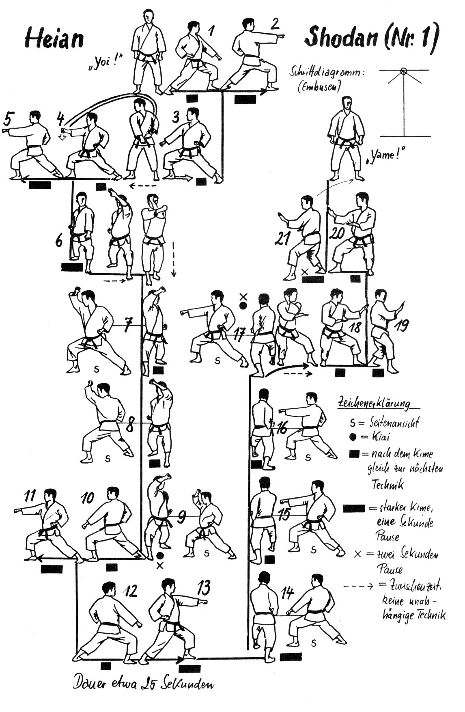

Katas
No estilo shotokan existem 26 Katas, Classificados em Níveis Básicos, Intermediários e Avançados.
Clicar nas Kata para ter acesso aos vídeos!
| Kata Serie Heian | Kata Serie Tekki | Katas Intermediários | Katas Avançados |
|---|---|---|---|
...uma filosofia de vida
| Kata Serie Heian | Kata Serie Tekki | Katas Intermediários | Katas Avançados |
|---|---|---|---|